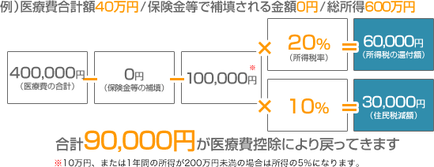

インプラント治療は自由診療のため、決して安いとは言えません。
しかし、医療費控除を利用すれば一部の金額が戻ってくることをご存知でしたか？インプラント治療は医療費控除の対象なのでしっかりと申告をし、
治療費を安くして、お得にインプラント治療を受けましょう。
インプラントならアイデンタルクリニック トップページ > 医療費控除について
1.1年間に10万円以上の医療費を支払った場合に還付されます
2.所得が多い人が申告した方が戻ってくる金額が高くなります
3.生計が一緒ならば医療費を夫婦で合算してどちらからでも申告ができます
4.申告し忘れても、5年前まで遡って医療費控除を受けることができます

1年間に支払った医療費の合計が10万円以上（所得が200万円未満の場合は、
医療費の合計が1年間の所得の5%を超えていること）の場合、確定申告で医療費控除の
申請手続きをすれば、所得税の還付と、翌年度の住民税減額を受けることができます。
医療費控除金額は以下のように計算します。

通院にかかった交通費も医療費控除の対象に含めることができます
通院に公共交通機関を使用した場合、交通費も医療費控除の対象となります。通院で公共交通機関を使用する場合には、診察券などで通院日時が確認ができるようにするとともに、通院にかかった金額も記録しておくようにしましょう。
なお、車で通院した場合の駐車場代など、公共交通機関以外を使用した場合には医療費控除の対象に含めることができませんのでご注意下さい。